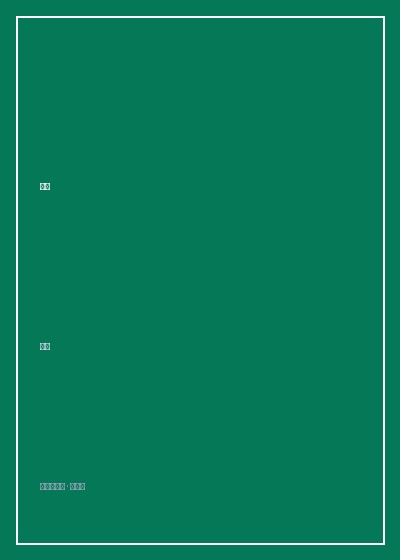

西决

总体观点
笛安的《西决》是“龙城三部曲”（《西决》《东霓》《南音》）中最受赞誉、文学成色最纯正的一部代表作。小说彻底跳脱了早年青春伤痕文学狭隘的校园早恋与无病呻吟格局，将视角投向中国北方工业重镇“龙城”一个看似枝繁叶茂却暗流汹涌的传统大家族——郑氏家族。
故事由堂兄郑西决的第一人称视角娓娓道来。西决幼年父母双亡，被三叔三婶抚养长大，养成了隐忍、温厚、近乎圣人般牺牲自我以维系家庭完整的长兄性格。然而，随着泼辣不羁的堂姐东霓带着私生女归来、单纯娇憨的小妹南音面临高考、三叔深埋二十年的出轨丑闻与西决身世秘密的连环引爆，这个家族脆弱的体面轰然瓦解。笛安以极具同理心的大气笔触，探讨了血缘纽带的残酷与神圣——家是囚禁个体的无形牢笼，却也是风雨飘摇红尘中唯一能庇护灵魂的最后孤岛。
核心观点
-
1. 家庭是个复杂的生命体：有光鲜体面也有腐烂脓疮
任何看似和睦圆满的传统大家庭内部，往往深埋着长达数十年不为人知的道德背叛、隐忍与谎言。
三叔一辈子在厂里担任受人敬重的总工程师，三婶贤惠持家，然而一张旧信件却无情揭开了三叔早年与女徒弟私通生子的惊天丑闻。 -
2. 长兄如父的圣人式牺牲与沉重心理枷锁
西决因为寄人篱下的感恩心理，将守护家族和睦视作毕生信仰，不断压抑自己的爱情与前途直至走向自毁。
为了不破坏家庭氛围，西决眼睁睁看着自己深爱的女友陈嫣被小叔横刀夺爱并成为自己的小婶，依然在婚礼上强颜欢笑端茶倒水。 -
3. 东霓的决绝反叛与骨子里的渴望被爱
看似冷酷自私、穿金戴银流连风月的东霓，其浑身尖刺不过是为了掩盖自幼遭受父母争吵虐待留下的巨大创伤。
东霓在深夜酒吧喝得酩酊大醉倒在西决肩头痛哭，吐露自己远嫁新加坡不过是一场逃离龙城泥潭的绝望赌博。 -
4. 身世秘密的崩塌：血缘不是唯一的伦理纽带
当西决发现自己根本不是郑家亲生骨肉时，二十年建立的认同感瞬间坍塌，但在风暴过后他依然选择做郑家的儿子。
得知自己母亲当年出轨所生下自己的一刻，西决在雪夜立交桥下独坐到天明，最终选择将身世秘密烧成灰烬，继续守护病重养父母。 -
5. 代人受过的终极救赎：为爱承担罪名与放逐
为了保护堂妹南音与东霓免受牢狱之灾，西决毅然挺身而出揽下过失伤人罪责，以肉身的囚禁换取家族的安宁。
小说结尾西决平静戴上手铐坐上警车，回望龙城漫天飘落的灰白雪花，心中唯有对弟妹们平安成长的深切祝福与坦然释怀。
全书结构
-
第一部 龙城旧事：郑家大院的平静表象
交代龙城郑家三代同堂的家族图谱，西决与东霓、南音三兄妹的深厚羁绊，以及平静之下的暗涌。
描绘春节全家几十口人在老宅包饺子的热闹场面，在热气腾腾的烟火气中敏锐捕捉三叔与小叔之间的诡异眼神互动。 -
第二部 裂痕初现：陈嫣与小叔的荒唐婚礼
西决深爱的女友陈嫣竟与小叔相恋结婚，西决承受夺爱之痛却依然选择体面成全，震惊整个家族。
还原婚礼当夜西决独自在阳台抽烟的孤寂背影，展现其异于常人的隐忍力与对家庭稳定的病态捍卫。 -
第三部 丑闻崩盘：上一代恩怨的全面反噬
东霓私生女雪碧的秘密曝光，三叔当年出轨往事浮出水面，三婶心碎中风，家族体面荡然无存。
三婶在病房苏醒后指着三叔痛斥二十载同床异梦的惨烈控诉，彻底打破后辈对父辈完美道德形象的幻想。 -
第四部 身世迷局与风雪救赎
西决得知自己并非郑家血脉的惊天真相，在信仰幻灭后为了保护东霓决意顶罪入狱，完成最后的悲壮守护。
看守所会客室内隔着玻璃与东霓对视，西决微笑着嘱托姐姐带好雪碧，在牺牲中完成对自我人生的崇高加冕。